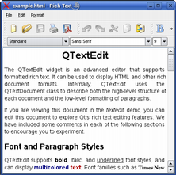

| Home · All Classes · Main Classes · Grouped Classes · Modules · Functions |
[Contents]
A Qtopia Core application requires a master application to be running, or to be the master application itself. The master application is responsible for managing top-level window regions, pointer handling and character input. Any Qtopia Core application can be the master application by constructing the QApplication object with the QApplication::GuiServer type, or by running the application with the -qws command line option.
An application can be run using both single and multiple displays, and various command line option are also available.
Note that this document assumes that you either are using the Qtopia Core Virtual Framebuffer or are running Qtopia Core using the VNC protocol, or that you have the Linux framebuffer configured correctly and that no master process is running. (To test that the Linux framebuffer is set up correctly, use the program provided by the Testing the Linux Framebuffer document.)
To run the application using a single display, change to a Linux console and select an application to run, e.g. demos/textedit. Run the application with the -qws option:
cd path/to/Qtopia/Core/demos/textedit
./textedit -qws
| Provided that the environment variables are adjusted properly during the installation process, you should see the Text Edit demo appear. If the input methods don't work properly, the input driver and device must be specified explicitly. For more information, please consult the following documentation: |  |
Additional applications should be run as clients, i.e. without the -qws option. You can exit the master application at any time using Ctrl+Alt+Backspace.
Qtopia Core also allows multiple displays to be used simultaneously by running multiple Qtopia Core master processes. This is achieved using the -display command line parameter or the QWS_DISPLAY environment variable.
The -display parameter's syntax is:
<gfx driver><:driver specific options><:display number>
The valid drivers are LinuxFb, QVfb, VNC and Transformed. For example, use the following code to run the example and demo launcher Qt Demo, on a transformed display:
cd path/to/Qtopia/Core/examples/tools/qtdemo
qtdemo -qws -display transformed:rot90:1
Alternatively, you can set the QWS_DISPLAY environment variable before running the application. For example, if the current shell is bash, ksh, zsh or sh:
export QWS_DISPLAY=<gfx driver><:driver specific options><:display number>
| Option | Description |
|---|---|
| -fn <font> | Defines the application font. For example:./myapplication -fn helvetica The font should be specified using an X logical font description. |
| -bg <color> | Sets the default application background color. For example:./myapplication -bg blue The color-name must be one of the names recognized by the QColor constructor. |
| -btn <color> | Sets the default button color. For example:./myapplication -btn green The color-name must be one of the names recognized by the QColor constructor. |
| -fg <color> | Sets the default application foreground color. For example:./myapplication -fg 'dark blue' The color-name must be one of the names recognized by the QColor constructor. |
| -name <objectname> | Sets the application name, i.e. the application object's object name. For example:./myapplication -name texteditapplication See also qApp. |
| -title <title> | Sets the application's title. For example:./myapplication -title 'Text Edit' |
| -geometry <width>x<height>x<Xoffset>x<YOffset> | Sets the client geometry of the first window that is shown. For example:./myapplication -geometry 300x200x50x50 |
| -keyboard | Enables the keyboard. See also the Pointer Handling documentation. |
| -nokeyboard | Disables the keyboard. |
| -mouse | Enables the mouse cursor. See also the Pointer Handling documentation. |
| -nomouse | Disables the mouse cursor. |
| -qws | Runs the application as a master application, i.e. constructs the QApplication object with the QApplication::GuiServer type. |
| -display | Specifies the display driver. See also the Using Multiple Displays documentation. |
| -decoration <style> | Sets the application decoration. For example:./myapplication -decoration windows The supported styles are windows, default and styled. See also QDecoration. |
[Contents]
| Copyright © 2006 Trolltech | Trademarks | Qt 4.1.5 |